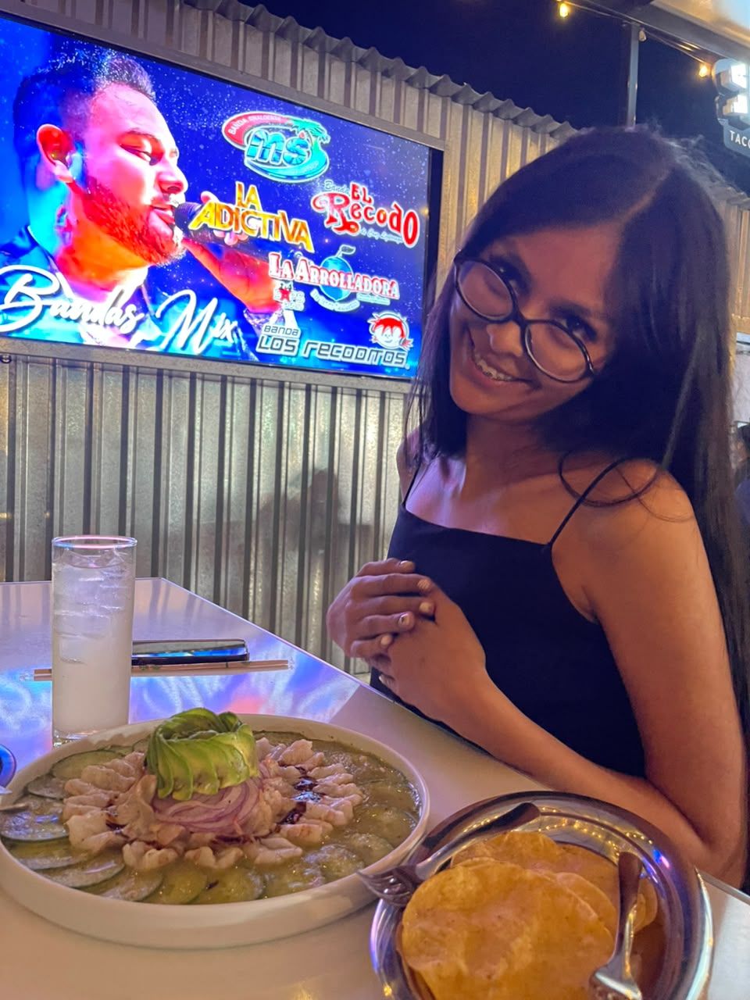

No se me da escribir poemas, pero lo intentare. Tal vez pudiera estar pasando por un mal día, pero el verte me hace olvidarme por completo de eso. Al abrazarte y darte un beso conviertes todo lo malo en un momento tan hermoso, tú tan capaz de hacerme pasar la noche más bonita y sentir que vuelo mientras me pierdo en tus ojos.
contigo todo es mas facil, me encanta poder molestarte con que eres mayor que yo y ver tus berrinchitos que nomás me dan risa y ternura. Pero lo que de verdad se me quedó guardado fue ese ratito en el carro de regreso a tu casa. Íbamos en silencio, escuchando música, mientras te recargabas en mi hombro y abrazabas mi brazo. Sin decir una sola palabra, me diste una paz tan bonita de esas que dan ganas de que el camino no se termine nunca. Ahí me di cuenta de lo mucho que me gusta estar contigo y lo importante que eres para mi.
Por eso me hace imaginar todo lo bonito que nos falta por vivir juntos. Tal vez sea rara esta carta, pero aunque me cueste decir las cosas, de una forma que no entiendo terminé queriéndote mucho. Me haces sentir bien, quiero cuidarte y hacerte sentir bonito. Aunque luego me salgas con tus berrinchitos de " ya no me amas ". y en realidad, me haces tener un proceso bioquimico en el hipotalamo causado por la segregacion de dopamina. en otras palabras: Te Adoro ♥
